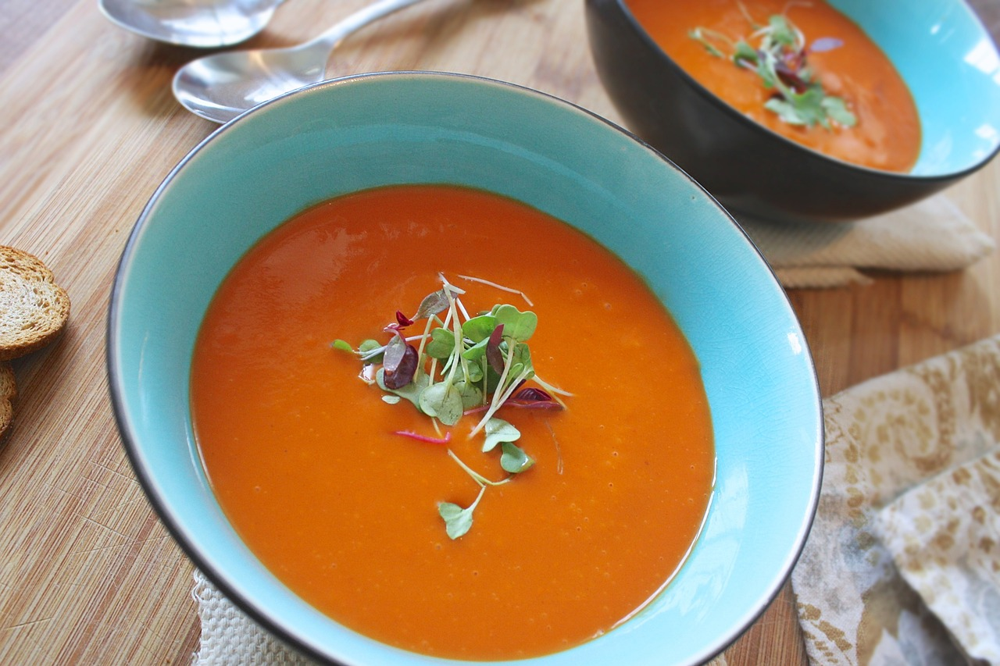

Fresh Tomato Soup
This tomato soup recipe is simple,quick,and perfect to make when tomatoes are ripe in gardens and farmer's markets for a delicious summertime treat

- Prep Time : 5 mins
- Cook Time : 30 mins
- Total Time : 35 mins
- Servings : 6
How to Make Tomato Soup
Here's a very brief overview of what you should do :
- Boil the tomatoes, onion, garlic, and broth.
- Run the mixture through a food mill into a large bowl.
- Make a roux.
- Add the tomato mixture and season.
How to Store Tomato Soup
Store(completely cooled) tomato soup in an airtight container in the refrigerator for up to four days.
How to Freeze Tomato Soup
This recipe makes six servings,so if you need to freeze leftovers, that's okay! Simply ladle indivudual portions of (completely cooled) tomato soup into zip-top bags and squeeze out the excess air. Label and date them, then freeze for up to three months.
Ingredients
-
4 cups chopped fresh tomatoes
- 2 cups chicken broth
- 4 cloves garlic
- 1 large slice of onion
- 2 tablespoons butter
- 2 tablespoons all-purpose flour
- 2 teaspoons white sugar, or to taste
- 1 teaspoon salt, or to taste
Nutrition Facts
- 80 Calories
- 4g Fat
- 9g Carbs
- 2g Protein
Go back